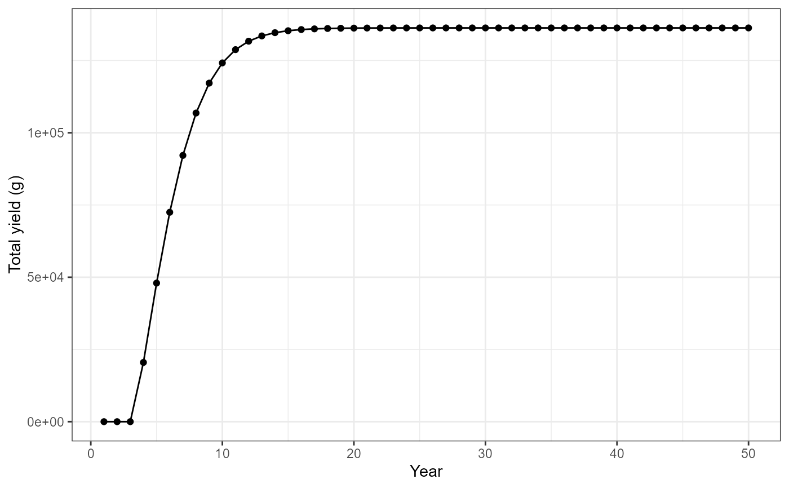
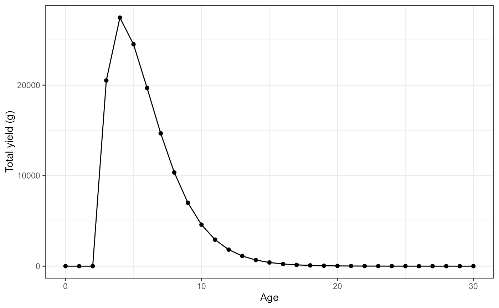
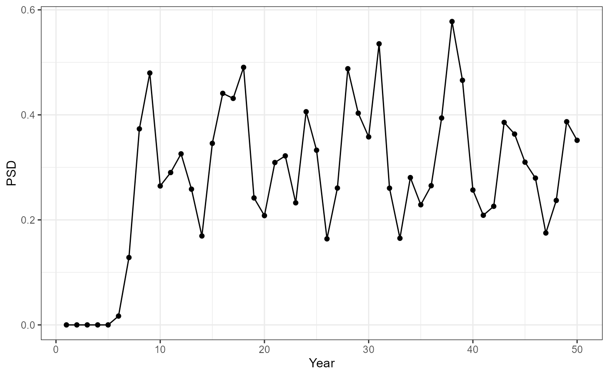
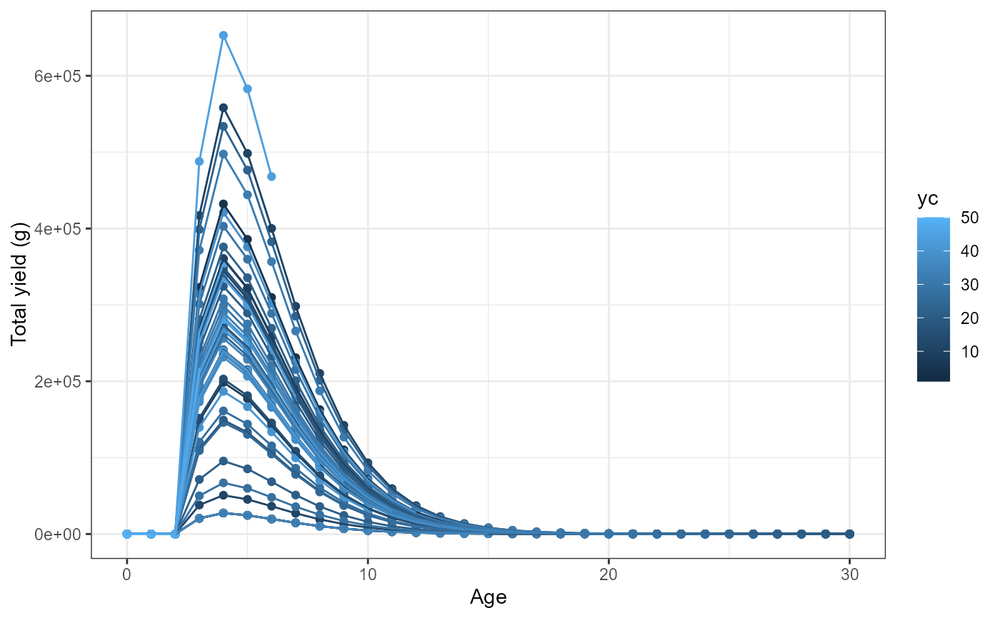

Main function to simulate expected yield using the Dynamic Pool model for a range of input parameters, including minimum length limits for harvest
Source:R/dpmBH_MinLL_fixed.R
dpmBH_MinLL_fixed.RdEstimate yield using the Beverton-Holt Yield-per-Recruit (YPR) model using ranges of values for conditional fishing mortality (cf), conditional natural mortality (cm), and minimum length limits for harvest (minLL).
Usage
dpmBH_MinLL_fixed(
simyears,
minLL,
cf,
cm,
rec,
lhparms,
matchRicker = FALSE,
species = NULL,
group = NULL
)Arguments
- simyears
A single numeric for the lower limit of minimum length limit for harvest in mm.
- minLL
A single numeric representing the minimum length limit for harvest in mm.
- cf
A matrix of conditional fishing mortality where each row represents a year and each column represents age. Ages are age-0 through maximum age.
- cm
A matrix of conditional natural mortality where each row represents a year and each column represents age. Ages are age-0 through maximum age.
- rec
A A numeric vector of length
simyearsto specify recruitment each year. The vector can be geneated using thegenRecruits()function.- lhparms
A named vector or list that contains values for each
N0,tmax,Linf,K,t0,LWalpha, andLWbeta. SeemakeLHfor definitions of these life history parameters. Also see details.- matchRicker
A logical that indicates whether the yield function should match that in Ricker (). Defaults to
TRUE. The only reason to changed toFALSEis to try to match output from FAMS. See the "YPR_FAMSvRICKER" article.- species
is a single character to specify the species used in the simulation and will define the length for
stock,quality,preferred,memorable, andtrophy. Length categories are obtained from the FSA package, see thePSDlitdocumentation.- group
is a single character to specify the sub-group name of a species used in the simulation and will define the length for
stock,quality,preferred,memorable, andtrophy. Length categories are obtained from the FSA package, see thePSDlitdocumentation.
Value
A list with two data.frame object. The first list item named sumbyAge contains a data.frame with the following calculated values in a summary by age:
yearis the year number for the simulationycis the year class number for the simulationageis the age of fish from the year classlengthis the length at age at the beginning of the year based on parameters supplied for the von Bertlanffy growth model.weightis the total weight at the beginning of the year for length at age based on the parameters supplied for the weight-length model.N_startis the number of fish alive at the start of the year for the given age and year class.explitationis the exploitation rate at age based on the supplied conditional fishing mortality rate.expect_nat_deathis the expectation of natural death based on the supplied conditional natural mortality rate.cfis the supplied conditional fishing mortality rate.cmis the supplied conditional natural mortality rate.Fis the instantaneous rate of fishing mortality.Mis the instantaneous rate of natural mortality.Zis the instantaneous rate of total mortality.Sis the (total) annual rate of survival.biomassis the total biomass of fish at age and yearN_harvestis the total number of fish harvested at age and yearN_dieis the total number of fish that die at age and yearyieldis the estimated yield (in g).minLLis the minimum length limit specified in the simulationN0is the number of initial
For convenience the data.frame also contains the model input values (minLL, N0, N0, Linf, K, t0, LWalpha, LWbeta, and tmax).
The data.frame also contains a notes value which may contain abbreviations for "issues" that occurred when computing the results and were adjusted for. The possible abbreviates are as follows:
minLL>=Linf: The minimum length limit (minLL) being explored was greater than the given asymptotic mean length (Linf). For the purpose (only) of computing the time at recruitment to the fishery (tr) the Linf was set to minLL+0.1.tr<t0: The age at recruitment to the fishery (tr) was less than the hypothetical time when the mean length is zero (t0). The fish can't recruit to the fishery prior to having length 0 so tr was set to t0. This also assures that the time it takes to recruit to the fishery is greater than 0.Y=Infinite: The calculated yield (Y) was infinity, which is impossible and suggests some other propblem. Yield was set to NA.Y<0: The calculated yield (Y) was negative, which is impossible. Yield was set to 0.Nharv<0: The calculated number of fish harvested (Nharv) was negative, which is not possible. Number harvested was set to 0.Ndie<0: The calculated number of fish recruiting to the fishery that died naturally (Ndie) was negative, which is not possible. Number that died was set to 0.agvglen<minLL: The average length of harvested fish was less than the given minimum length limit being explored, which is not possible (with only legal harvest). The average length was set to the minimum length limit.
The second list item named sumbyYear contains a data.frame with the following calculated values in a summary by year:
yearis the year number for the simulationsubstockis the number of substock sized fish at age and year at the beginning of the year.stockis the number of stock sized fish at age and year at the beginning of the year.qualityis the number of quality sized fish at age and year at the beginning of the year.preferredis the number of preferred sized fish at age and year at the beginning of the year.memorableis the number of memorable sized fish at age and year at the beginning of the year.trophyis the number of trophy sized fish at age and year at the beginning of the year.PSDis the number of quality sized fish divided by the number of stock sized multiplied by 100.PSD_Pis the number of preferred sized fish divided by the number of stock sized multiplied by 100.PSD_Mis the number of memorable sized fish divided by the number of stock sized multiplied by 100.PSD_Tis the number of trophy sized fish divided by the number of stock sized multiplied by 100.Age_1plusis the total number of fish age-1 plus per year.Yield_Age_1plusis the total year of age-1 plus fish per year.Total_biomassis the total biomass of age-1 plus fish per year.N_harvest_Age_1plusis the number of age-1 plus fish that are harvested per year.N_die_Age_1plusis the nubmer of age-1 plus fish that die per year.
PSD-X are calculated based on the number of fish in each category (stock, quality, preferred, memorable, and trophy) at the beginning of the year. That is, the length at age during the start of the year is used to assign PSD-X categories at age. For example, if Quality size is 300mm, an age-1 fish at 275mm at the start of the year would not be counted as a quality sized fish, but an age-2 fish at 325mm at the start of the year would be counted as a quality sized fish.
See also
yprBH_func for estimating yield from single values of cf, cm, and minLL, and yprBH_minLL_fixed for simulating yield with multiple values of cf and cm but a fixed value for minLL.
See this demonstration page for more plotting examples
Author
Jason C. Doll, jason.doll@fmarion.edu
Examples
#load required library
library(dplyr)
#>
#> Attaching package: 'dplyr'
#> The following objects are masked from 'package:stats':
#>
#> filter, lag
#> The following objects are masked from 'package:base':
#>
#> intersect, setdiff, setequal, union
library(ggplot2)
# Example of simulating yield with the dynamic pool model,
lhparms <- makeLH(N0=100,tmax=30,Linf=1349.5,K=0.111,t0=0.065,
LWalpha=-5.2147,LWbeta=3.153)
simyears <- 50
minLL <- 400
rec <- genRecruits(method = "fixed", nR = 100, simyears = simyears)
cm <- matrix(rep(c(rep(0,1), rep(0.18,(lhparms$tmax))), simyears),nrow=simyears,byrow=TRUE)
cf <- matrix(rep(c(rep(0,1), rep(0.33,(lhparms$tmax))), simyears),nrow=simyears,byrow=TRUE)
out<-dpmBH_MinLL_fixed(simyears = simyears, minLL = minLL, cf = cf,
cm = cm, rec = rec, lhparms = lhparms,
matchRicker=FALSE,species="Striped Bass",group="landlocked")
#Use summary by year data frame to plot yield vs year
ggplot(data=out[[2]],mapping=aes(x=year,y=Yield_age_1plus)) +
geom_point() +
geom_line() +
labs(y="Total yield (g)",x="Year") +
theme_bw()

#Plot date using summary by age
#filter for year class = 1
plotdat<- out[[1]] |> filter(yc==1)
#Plot yield vs age
ggplot(data=plotdat,mapping=aes(x=age,y=yield)) +
geom_point() +
geom_line() +
labs(y="Total yield (g)",x="Age") +
theme_bw()

#Recruitment based on a normal distribution
rec <- genRecruits(method = "normal", simyears = simyears,
meanR = 1000, sdR = 500, minR = 100, maxR =2500)
cm <- matrix(rep(c(rep(0,1), rep(0.18,(lhparms$tmax))), simyears),nrow=simyears,byrow=TRUE)
cf <- matrix(rep(c(rep(0,1), rep(0.33,(lhparms$tmax))), simyears),nrow=simyears,byrow=TRUE)
out_2<-dpmBH_MinLL_fixed(simyears = simyears, minLL = minLL, cf = cf,
cm = cm, rec = rec, lhparms = lhparms,
matchRicker=FALSE,species="Striped Bass",group="landlocked")
#Use summary by year data frame to plot yield vs year
ggplot(data=out_2[[2]],mapping=aes(x=year,y=PSD)) +
geom_point() +
geom_line() +
labs(y="PSD",x="Year") +
theme_bw()

#Plot date using summary by age
#Plot yield vs age for each year class
ggplot(data=out_2[[1]],mapping=aes(x=age,y=yield,group=yc,color=yc)) +
geom_point() +
geom_line() +
labs(y="Total yield (g)",x="Age") +
theme_bw()
